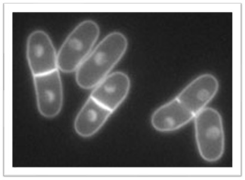
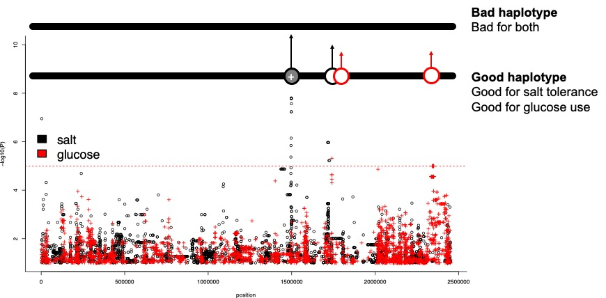
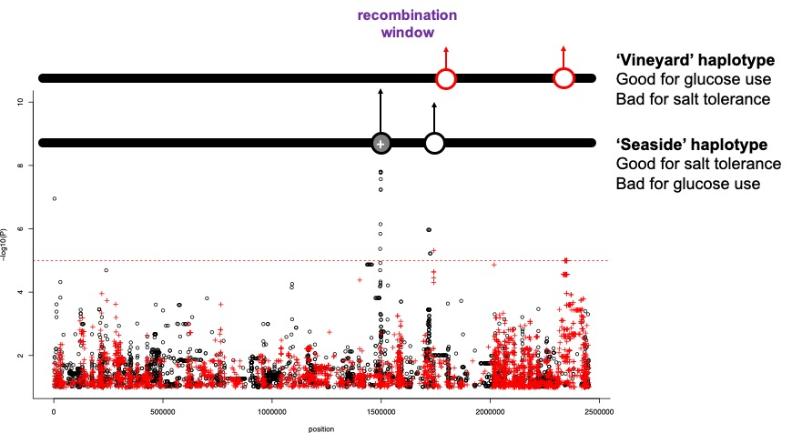

#clear all the previous data
rm(list = ls())
#set working directory
#your working directory will be different!
setwd("/Users/dj757/gd/modules/BIO56I/workshops/gwas")
#load the data
load(url("http://www-users.york.ac.uk/~dj757/BIO00056I/data/gwas-data.Rda"))BIO00056I GWAS Workshop
1 Learning objectives
- To understand the principles of quantitative genetics.
- To appreciate how this alters our perspective on evolution
- To learn how to design experiments that explore quantitative trait variation.
2 Introduction
2.1 Background
In the lectures, we learnt about quantitative traits and how to analyse them. To recap, quantitative traits are often described as complex traits, because they are affected by genetic variation in many genes. The genetic variants in the genes each account for a small proportion of the trait variation. We usually assume that the contribute in an additive way (rather than more complex ways).
One good way to identify loci controlling quantitative traits is to perform a Genome-Wide Association Study, or GWAS. GWAS experiments use diversity panels of individuals to identify genetic markers that are significantly associated with a trait of interest.
Using a diversity panel instead of a bi parental mapping population ensures that linkage disequilibrium is low (bits of co-inherited DNA are small), and therefore resolution is high (QTL sizes are small), which helps to narrow down the regions containing the genes controlling the trait. They also capture much more genetic variation.
Quantitative traits and evolution
Most traits are quantitative, and are caused by multiple genetic variants. This means that:
- We expect traits to adapt gradually, as a few variants change
- We do not expect to observe many strong selective sweeps
Glossary
Technical definitions for this workshop.
- Schizosacharomyces pombe:
- GWAS:
- trait :
- Manhattan plot:
- QTL:
- haplotype:
- selective sweep:
2.2 Fission yeast
In this workshop we’ll use data from the fission yeast Schizosacharomyces pombe, which is a model species for cell biology. You can read more here about S. pombe here.
When fission yeast is not being used in labs as a model species for cell biology, it usually grows on fruit. It is most often found in high-sugar fruits or in fermented beverages (wine, beer, and quite often in cachaça in Brazil).

Figure 1. The fission yeast Schizosacharomyces pombe. Fission yeast is an excellent model system. It is easy to grow in the laboratory, easy to transform, and it has a very small genome (12 Mb). It has ~5,000 protein coding genes, and ~1500 non-coding RNAs. It is haploid. Fission yeast and the budding yeast Saccharomyces cerevisiae are not closely related fungi, so study of both has contributed vastly to our understanding of molecular biology, and to evolutionary biology and quantitative genetics.
2.3 GWAS for yeast
GWAS is usually used for human or crop traits, but of course we can apply this method to any recombing sexually-recombining eukaryotic species where we have trait data and polymorphism data (eg: SNPs).
The data we will use is from two papers from Nature Genetics, and Nature Communications. These articles described the genetic diversity of 160 strains of this species by sequencing their genomes. We also measured over 200 traits.
In this workshop we will examine some GWAS results for four traits, and think about what these results could mean for the evolution of this species.
2.4 The traits
The traits we will look at today are:
Growth in 400mM NaCl The growth rate of the strains in 400 mM salt. This could be important if strains grew in fruit near the sea, for example.
Growth at an elevated temperature The growth rate of the strains at 40 degrees centigrade. This is quite warm for this yeast, so it’s a stressful condition.
Maximal cell density in rich media This trait measures how well each strain grows, if it’s given plenty of sugar and other resources.
Glucose/fructose utlisation level in wine How much of the glucose and fructose sugars each strain used in grape must (which is used to make wine).
Traits and trade-offs
A high value in one of these traits could be adaptive one environment. But it ma be sub-optimal in another environment. Also, optimising one trait may limit another trait. This could be vbause one mutation may result in multiple changes, or the alleles that influence two traits are closely linked.
3 Exercises
3.1 Exploring the data
First, clear all the previous data you may have in R, set your working directory, and load the new data.
To set a working directory you can either use a command (as below), or use the menus;
Session > Set Working Directory > Choose Directory.
After loading this data you’ll then have four data frames of data called gluc, heat, rich and salt. Each of these data frames contains the GWAS results for one trait. Let’s start by looking at one table, salt.
Try these commands to see what the contain:
#examine what is in the salt data frame
head(salt)
nrow(salt)
summary(salt)
View(salt)This table contains the output from GWAS program called LDAK. This is one of man software tools that run GWAS analysis. It describes the association of each SNP with the trait of salt tolerance.
Each row of the table contains information about a SNP. For our purposes, the important columns are:
Wald_P, the P-value, the probability that this SNP is associated with this traitChr, which chromosome the SNP is onBP, the position of the SNP in the chromosomeEffect_size, how strongly this variant effects the trait
The effect size of the variant estimates the proportion of trait variation that is explained by this SNP. From our understanding of The Neutral Theory of Molecular Evolution, we know that most variants are selectively neutral. ie: they have little or no effect on fitness.
Given this, we might expect that most variants have small, or no effect, on traits.
3.2 Manhattan plot
A Manhattan plot is a standard way of viewing GWAS results. They are named Manhattan plots because they resemble the skyline of a highrise city, such as Manhattan Island (New York).
Manhattan plots show the position of the SNP on the x axis, and the p-value of the association on the y axis. P-alues are plotted as -log10(P), so that very small p-values end up at the top of the plot, and stand out.
The code below will make a Manhattan plot for the salt trait.
#set plotting parameters
layout(matrix(c(1:3), 1, 3, byrow = TRUE),widths = c(5579133,4539804,2452883))
par(bty="l",cex=0.8,mar=c(2,2,2,0)+2)
#loop through chromosomes 1,2,3, plotting each one in turn
for (j in 1:3){
#make a subset of SNPs from this chromosome
temp = subset(salt, Chr == j)
#plot these
plot(temp$BP, -log10(temp$Wald_P),
main = paste("Chr",j),ylim=c(1,10),
xlab="position",ylab="-log10(P)"
)
#draw a threshold line
#SNPs above this line are statistically associated with the trait
abline(h=-log10(1e-5),col=2,lty=2)
}We see a small number* of very low P-values, with -log10 values they are at the top** of the y axis. For these, there is strong support that the affect the trait.
Then, there are a large number with P-values of around 0.1 or greater. These are at the *bottom** of the y axis. There is weak support that the affect the trait. These may have tiny effect sizes, or none at all.
-log10 scale plotting
Note that we use plot(temp$BP, -log10(temp$Wald_P) to plot the Wald_P P-values on a negative log scale. This means that very significant P-values (eg: P = 1 x 10-9.5), will show as high points on the plot (eg: at position 9.5 on the vertical y axis in this case).
All the non-signifcant SNPs (eg: P = 0.1, which is P = 1 x 10-1) will be at the bottom of the y axis. If most variants have small effects, or no effects on traits, there will be many of these.
This shows how GWAS relates to other areas of evolutionary theory.
3.3 SNP effect sizes
The strength of the association between the genotype and the phenotype is related to the effect size of the variant (how strongly it affects the trait). Some alleles will affect the trait very strongly, others not so much. Now let’s look at how large the effect sizes are, by making a histogram of all the effect sizes.
hist(salt$Effect_size,br=30)
Condider this result
- What this histogram tell you about SNP effect sizes?
- Is this consistent with The Neutral Theory of Moleclar Evolution?
3.4 How does this influence evolution?
The effect size of a variant is the proportion of the phenotypic variance that the SNP explains. We can see that most of the effect sizes are very small. Most are smaller than 0.05, meaning that they produce an effect that is much smaller than 5% of the trait. They have tiny effects on the trait.
At this point let’s think about how such tiny effect alleles might influence evolutionary change.
A selective sweep is a process where a beneficial mutation becomes fixed in a population rapidly, removing the genetic variation around the selected allele. Ask yourself:
- If a trait is caused by small number of large effect mutations, would we expect to observe a selective sweep?
- What about a trait with a large number of mutations with very tiny effects?
- Would we expect to observe a selective sweep if a large effect mutation lies very close to a deleterious allele?
3.5 Another trait: glucose & fructose use
In a vineyard environment, where this yeast grows, it will be an advantage to be able to metabolise the glucose and fructose in the rotting fruit. The glucose/fructose use is in the gluc data frame.
Again, we will look at the P-values Wald_P and how much each SNP is predcited to affect the trait (Effect_size).
#set plotting parameters
layout(matrix(c(1:3), 1, 3, byrow = TRUE),widths = c(5579133,4539804,2452883))
par(bty="l",cex=0.8,mar=c(2,2,2,0)+2)
#loop through chromosomes 1,2,3, plotting each one in turn
for (j in 1:3){
temp = subset(gluc, Chr == j)
plot(temp$BP, -log10(temp$Wald_P),
main = paste("Chr", j, "Gluc"),ylim=c(1,10),
xlab="position",ylab="-log10(P)"
)
abline(h=-log10(1e-5),col=2,lty=2)
}
Again, we see a small number of very low P-values, with -log10 values they are at the top of the y axis. For these, there is strong support that the affect the trait.
Then, there are a large number with P-values of around 0.1 or greater. These are at the bottom of the y axis. There is weak support that the affect the trait. These may have tiny effect sizes, or none at all.
Now, make a histogram of the effect sizes:
hist(gluc$Effect_size)3.6 Looking at two traits
Species are not able to adapt simply to one condition, like heat or salt stress, because the natural environment is complex, and it changes from day to day. As a thought experiment, we will consider this using the fission yeast data.
We will compare the two Manhattan plots by plotting them on top of each other. We will plot the salt results in black, and the glucose metabolism results in red, and write the plot output to a pdf file. This pdf will appear in your working directory.
#open the pdf writer
pdf("GWAS-plot3.pdf",width=60)
#set up the plot layout
layout(matrix(c(1:3), 1, 3, byrow = TRUE),widths = c(5579133,4539804,2452883))
par(bty="l",cex=0.8,mar=c(2,2,2,0)+2)
#loop through chromosomes
for (j in 1:3){
#plot the salt GWAS points (black dots)
temp = subset(salt, Chr == j)
plot(temp$BP, -log10(temp$Wald_P),main = "",ylim=c(1,10),xlab="position",ylab="-log10(P)")
#add the glucose/fructose GWAS points (red crosses)
temp2 = subset(gluc, Chr == j)
points(temp2$BP, -log10(temp2$Wald_P),main = "gluc",ylim=c(1,10),xlab="position",ylab="-log10(P)",col=2,pch=3)
#add the significance threshold
abline(h=-log10(1e-5),col=2,lty=2)
}
#close the pdf writer
dev.off()Now find the pdf called GWAS-plot3.pdf and take a look.
3.6.1 Might mutations for two traits conflict?
Look at that significant peak on chromosome 3, at position ~1,500,000. Remember, this will have a large effect size. See how there is also an important variant for glucose & fructose use on chromosome 3, near the same position.
Let’s consider what might happen if alleles are linked and the environment is complex (which all environments are). In this case, we consider an environment which is salty, but has plenty of fructose. A coastal vineyard, for example.
What might happen if the all the helpful alleles are on the same haplotype?

haplotypes
In a physical sense a haplotype is a length of DNA from one chromosome. For diploid species such as yourself tht have a paternal and a maternal chromosome, this is easy to understand.
But for fission yeast is haploid (one copy of each chromosome), what does this mean? We can think of different haplotypes as different versions of the chromosome that exist within the population. Each will carry it’s own SNPs.
Through meiotic recombination, haplotypes will be mixed. But SNPs that are very close together on the chromosome will not become separated very often. So they will usually travel together.
3.6.2 Haplotype problems
Condider these situations:
- What might happen if the all the helpful alleles are on the same haplotype?
- What might happen if the two helpful alleles are on different (opposing) haplotypes?
The figures below will help to explain.
 Figure 2. Beneficial alleles on one haplotype. Would there be any ‘conflict’ here?
Figure 3. Beneficial alleles on two different haplotypes. What might happen here? What would the problem be?
4 Summary: what we have learned
This workshop used data from fission yeast, but the principles apply to quantitative traits in general. Some general principles we can obtain are:
- Most SNPs do not strongly associate with traits.
- Most SNPs have very small effects on traits, but some do have detectable effects.
- SNPs do not affect all traits at once. Some SNPs affect one trait, some affect another.
- Genetic variants, like SNPs, ‘travel’ through time and space in haplotypes
5 After the workshop: exam style questions
In exam questions, we often ask you to apply principles we have learned in workshops to other species, or other situations. Here are some examples to think about. Thinking about these situations will help to improve our grasp of the principes.
Principles of quantitative genetics
- Most SNPs have no effect, or very small effects, on traits.
- SNPs that do affect traits, are generally responsible for less than 5% of the trait variation.
- Effect sizes are also small for other genetic variants, such as transposon insertions, duplications/deletions and so on.
- Genetic variants can affect one trait, or several.
- In the short term, selection occurs on haplotypes, but over time recombination will separate linked variants.
5.0.1 Question 1. Why do we observe that most genetic variants have small effects on traits?
Hint: There are two was to anwser this one. a) To think about what we would expect to happen over time to variants that do have large effects. Consider those with large negative (deleterious) effects first, then those that are large and advantagous. b) To consider The Neutral Theory of Moleclar Evolution and molecular biology. If you change one amino acid in one protein, how much would you expect this to affect fitness? What about one synonymous mutation?
5.0.2 Question 2. Imagine we observe that a fungicde-resistant fungus is spread though a country, destroying crops.
We know that this fungicde-resistance is new, so we hypothesise that a new mutation has occured. We can culture this fungus in the laboratory and measure their fungicde-resistance. How could we use quantiative genetics and population genetics together to find out what is happening?